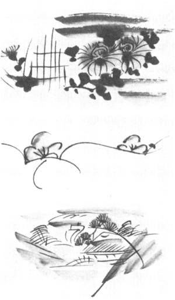

栃木県
益子の
窯場で長らく
土瓶の
絵附をしていた皆川マスというお婆さんのことは、既に多くの方々も知ってお
出での事と思います。その山水絵や
枝梅の土瓶は、焼物に眼を注ぐほどの人なら、おそらく誰でも見慣れているものでありましょう。誠にありふれた品物でありますが、それを対象にこの一文を草したく思いますのは、実はそれが美に関する幾多の根本問題を
孕んでいると思われるからであります。それに多くの方々によく知られている品物であるだけに、語るのに都合のよい
仲立であると思われます。お婆さんの
齢はもう八旬を越えましたので、その筆の一生も終りに近づきつつあることと思われます。それ故この一文がいくらかでも、その生涯を紀念するものであることを
希いつつ、ここに筆を執る次第であります。

皆川マス女の絵
私は別に益子土瓶の歴史や手法や、その他のことをここに詳しく書こうとするのではありません。ただ簡単に次のことを、予備知識として持って頂くだけで差し当りは充分だと思われます。
一、その土瓶に見られる絵附は、日本の伝統的な図柄の一つであります。山水の絵はもと
江州の
信楽に発したものでありましょうが、益子では明治の
半頃から盛に描かれるに至りました。模様は「山水」のほか「
四君子」とか「
籬に
牡丹」とか、おそらく二十種近くありましょうが、中で特に
持映されましたのは山水絵でありました。
一、いずれも代々伝ってきた非個人的な図柄で、作者の名を記したものは見当りません。
無落款がこの種の焼物の本来の性情であります。もとより安土瓶でありまして、主に関東一帯の台所で用いられたごく普通の雑器であります。
一、明治二、三十年頃は生産量の絶頂を示しました。当時は絵附に従事する者も十余人あったと申しますが、皆川マス女はその一人で、今日まで活き残っているのはもう彼女だけになりました。それにこの絵土瓶は昔ほどの需要が今はなく、近年急に生産が衰えて来ました。彼女は何でも十歳頃から描くことを教わり、
爾来引きつづいて仕事をし、凡そ六、七十年間も土瓶に絵附をしてきたわけであります。
一、達者な時で、かつ景気の好い頃は、日に千個も描いたといわれ、五百個ぐらい描くのは普通だったと申します。
如何に早くまた
夥しく描かれたかが分ります。
一、マス女は学問はなく、文字も読めず、また富もない普通の絵附師で、受ける賃銀も当時のならわしとしてごく低いものでありました。ただ
躰は強健で、性格は強く、頭も鋭く、男まさりのところがあります。
さて、話を進めますのに、
予め以上のような事柄を記憶して頂ければ、それで充分かと思われます。
しかし、なぜこのような一文を書くかの主要な理由は、その絵附がごく並のものでありながら、並々ならぬ美しさを持っているからであります。ほとんど消費物の如くに誰からも粗末に扱われては来ましたが、将来は必ずや美術館に陳列されるものとなるでありましょう。近年益子町に
御詠を刻んだ石碑が一基建てられました。陛下がマス女の絵附を御覧じて歌われたものであります。
さえもなき、媼のゑがくすゑものを
人のめづるも おもしろきかな
絵附の性格をよく
掴まれた
佳詠だと存じます。大戦前に
独乙で国際工藝品展覧会が行われ、日本からは吾々の手を通し、幾種かの固有のものを出品致しましたが、私たちはその中にこの山水土瓶を加えることを忘れませんでした。審査員は欧米各国の著名な工藝家や美術館員たちでありましたが、
金牌を得たのは実にこの安土瓶で、誠に興味深いことに思いました。もとよりその絵附の妙味が心ある人々の眼を
惹いたのであります。
これらの事実はついに人々の認識を深め、栃木県では昭和二十八年度の県の文化賞をマス女に贈るに至りました。
しかし考えますと、近代の美術品に見られるような、美を生む好条件はほとんどそこに見当らないのであります。
一 決して天才の筆になる絵附ではないこと。
一 独創的な仕事では少しもないこと。
一 稀有な品物ではなく、ざらにあること。
一 美しさが分って作られたものではないこと。
一 展観されたり鑑賞されたりするものではないこと。
一 個性の表現など見当らぬこと。
それ故むしろ次のような悪条件が揃っております。
一 平凡な無学な者が描いたこと。
一 自分が生んだ図柄ではないこと。
一 同一のものが無数に反復されていること。
一 安ものの実用品に過ぎないこと。
一 美しさのことなど知らぬままに描いてあること。
一 労働を伴う汗の多い仕事であること。
一 優れた個性の持合せなどないこと。
一 どこにも落款が見られぬこと。
これらのことを
顧みますと、むしろ多くの人々から
呪われてきた性質のみが眼立ちます。それにもかかわらず、どうしてその絵が美しく描かれるに至るのでありましょうか。
就中、不思議に思われますのは、作者は決して創作家ではなく、同じ幾種かの絵を反復して描くのでありまして、それ以外の絵は描く力さえないのであります。それも自身が生んだ模様ではなく、昔から伝ってきた絵柄に過ぎません。それを繰返し描くのでありますから、いわば「馬鹿の一つ覚え」に近いところがあります。いつも同じ図柄故、普通なら描くのに
厭き厭きするでありましょう。いやになる仕事だともいえましょう。実際そういう感じを時には持ったことと思われます。しかしこれを繰返さねば食べてゆかれぬ身分であります。たとえ単調でも無味でも忍んでゆかねばなりません。それはしばしば激しい労働で、ただ感興の
湧く時にのみ仕事をする美術家たちとは、その境遇に大変な開きが見られます。ですがこんな逆境から生れて、しかもそれが美術家たちでさえ、たやすくは生めぬほどの美しさを
現すのですから不思議であります。
もともと他人から教わった図柄を
何辺も何辺も繰返すのでありますから、個性などを出す機縁は、始めからないのであります。描く人によって多少の差違は現れるでありましょうが、その相違はただある個所の線が一本よけいに入れてあるとか、または長く引いてあるとか、点が幾つ多いとか、その程度のことに過ぎません。こういう性質の絵附には、各個人の独創的相違などは、てんで問題に上りません。ともかく描く者の個性の差違は、最少限度に消されてしまいます。それ故誰が描こうが大同小異で、また何千何万と描こうがこれもほぼ同一のものとなります。一生一代の逸品とか雄作とかいうようなものではなく、数えきれぬほどに同じものが繰返し描かれます。それも一人や二人の仕事ではありません。
試みに皆川マス女が長い一生の間に今まで一体どれだけの土瓶に絵附をしたかを計算すると致しましょう。仕事が盛んだった時期や、それが衰えた近年などを考慮に入れて、内輪に勘定致しましても、彼女が描いた土瓶の数は、驚くことに四百万個を越すかと思われます。前にも申しました通り一日に五百個、時としては千個も描いたといわれます。個人作家の生産する個数などとは、誠に天地の隔りで、
莫大な数量を示します。しかもかかる驚くべき数は、決してただ数のことには終りません。不思議な力を品物に
齎らすのは必定であります。心にも作り方にも美しさにも大きな影響を及ぼします。
おそらく日本の各地でこの種の土瓶は何千万個、否おそらく何億と生産され消費されたと思われます。大体土瓶の運命は
果ないもので、口が
毀れ、
蓋が
破れ、耳がもぎれ、それに火という敵と闘わねばなりません。その末路を
芥溜や
溝泥の中に見かけることは珍らしくありません。誠に安く売られ、手荒く使われる雑器の代表的なものと申さねばなりますまい。ではどうしてこんな低い境遇から、高い美しさが生れるのでありましょうか。「高い」といっては語弊があるなら、親しい自由な美しさとでもいい直しましょうか。私は理由を次のように数えたいと思います。
常識的に考えますと、安いとか、ざらにあるとか、手荒く作られるとかいうことは、少しも美しさを保障する性質とは思われません。それにたかが職人の仕事だと浅く考えられます。しかるに結果から見まして、並々ならぬ美しさが現れているとは、どういうことなのでありましょうか。
一 繰返しは単調を意味して
呪わしいこととも考えられますが、しかし反復は仕事に熟達を齎らします。これで充分に技が完成され、作り方をあぶなげのないものに致します。これは美を保障する大切な要因ではないでしょうか。
一 この熟達は、ついには一々何を描くかを意識させないまでに至ります。意識に縛られないこの自由は大した働きを致します。意識に止まるものが示し得ないものを示します。
一 この種の絵附は始めから非個人的な仕事であります。そのため個性を欠くという非難も出ましょうが、反面には人間の小さな個性に閉じこめられぬ事をも意味します。それ故かえって普遍なものに
繋がれてきます。誰でもに親しい図柄となる
所以であります。
一 雑器のこと故、美しく描かねばならぬとか、下手ではいけないとか、そういう悩みから自由になります。仕事はそんな相対的立場にはおりません。のびのびと描いてあるのはこの故であります。
一 同一の決定された画題を描くことは、不自由を意味するとしても、その題材に身を任せきることによって、少しも不自由を覚えず、かえってそれを内から自由にこなします。図柄はもと人間の考えたものでありますが、その考えから解放させてくれるのは、反復の功徳ともいえましょう。そのため人為を越えて自然さにまで帰ってゆきます。
一 昨日の絵を今日も描きまた明日も繰返すといいますが、実は凡てを忘れて描くに至りますので、何のこだわりもなくなり、一つ一つが自在なのであります。それ故絵を見ますと、少しも反復の退屈さがなく、筆の跡はいつも新鮮で
活々しています。決して線も点も眠ってはおりません。つまりいつも「今描いている」趣きがあります。反復であって反復でないものがあるのであります。
一 多く早く描くことは、図柄をいつも略化させます。それはただ粗略になるのではなく、結晶されてくることを意味します。しばしば何を描いてあるか分らないまでに変化してしまいますが、実はこの非実より実を強く現わすものはないのであります。
美しい民器には、しばしばこのような性質が見られます。これらの諸徳は
凡て伝統的な工藝品に見られる特色といってよいでありましょう。かつ労働を伴う手仕事に与えられる余徳ともいえましょう。もとより凡ての伝統的な品が美しいわけではなく、凡ての
労役が美しさを将来するとは申されません。それで時代が低く、環境が悪いと、伝統自身が生気のないものに沈みます。しかしこの
絵土瓶の歴史は
幸にも時代がまだ良かった時に発足しました。それ故模様は眠ったり死んだりしたものではありません。それに仕事は今の機械生産に伴う労働とは大変に違い、
遥かに人間的なものでありました。つまり手の技であったため、いつも心との
繋がりが密で、仕事と人間とに直接の連結がありました。それ故作る物には道徳が守られました。有難いことにこういう仕事こそ少からぬ悦びを伴います。この人間としての悦びこそは、美しさを生む大きな力と申されましょう。手仕事に美しいものが多いのはここに理由があると考えられます。
働きは並々ならぬ汗を伴ったとしても、それは
苦役とのみは申されません。「労働は苦痛なり」という前提は、手仕事の場合には
強ち当てはまりません。それ故、手仕事は機械生産の場合の如く、「時間の短縮」を権利として必ずしも要求致しません。むしろ時間を知らぬ仕事、時間なき仕事でありました。この場合「時間がない」というのは、時間の終りなき延長ということではなく、むしろ長短を持たぬ時間の意味なのであります。それ故手仕事においてはしばしば長い時間をも忘れたり、明日が待てず、夜をふかしたり致します。時計のない仕事であります。こういう時間なき時間に働く仕事こそ、本当に人間らしい仕事ではないでしょうか。手仕事にはしばしば誇りが伴いました。
御承知の通りその土瓶は日々の雑器で代表的な民藝品の一例といえましょう。それ故安ものであって、決して高価な貴族的な品ではなく、従って高い社会的位置を得るものではありません。いくら作っても始めから金銭的なまた社会的な
酬いは少いのであります。もし雑器が高価なまた
稀有な品であるならたちまち存在理由を失ってしまいます。どうしてこんな事情が美を約束し得るのでしょうか。事実美しいのですから、吾々はその秘密を解かねばなりません。想うに安いものであるそのことがかえって作る気持ちや作り方を自由にさせるといえましょう。いわゆる上等な結構な品物の性質がとかく冷たかったり固かったり、装飾が過ぎたりするのを考えますと、よく分ると思います。とかく上等の品々には延び延びした自由が見られません。それらの品は
疵を恐れたり
曲みを心配したり不完全をこわがったり致します。有難いことに雑器の場合にはそんな執着は伴いません。ずっと作る気持が自由で楽であります。安ものの余徳とでも申しましょうか。もとより余り荒々しさの度が過ぎたら、美しさを失いましょう。しかし「安かろ悪かろ」の言葉は、産業革命以後に、著しくなった現象で、それは商業主義に
煩わされた結果に他なりません。正当な民器は「安かろ良かろ」の逆説を可能にしてしまいます。
益子の絵土瓶はその正当な民器の一つなのであります。
さて、前に挙げました美の泉の中で、「反復であって反復でない」とか、「いつも今描かれている絵」とかいうことを申しました。これはちょっと分りにくい言葉かと思いますが、大に
肝心な点なので短く説明を加えましょう。ここで「今」というのは、仏教的
表詮で「即今」というのと同じ意味なのであります。「只今」なのであります。「この今」であります。つまり時間を横に数えずして、縦に考えて下さればよいわけであります。昨日と明日との中間にある今日ではなく、前後を持たぬ即今なのであります。あるいは左右を許さぬ中といってもよいでありましょう。独在する今なのであります。それ故いつ描くとしても、幾度描くとしても、今描くよりほかにない絵ということになります。ですからその絵はいつも新鮮な今に在ります。繰返しでありながら、決して昨日の繰返しではなくなります。人間の仕事が自由の中に入ると、昨日にも明日にも縛られません。存在するのは即今の連続のみで、単なる昨日からの連続ではなくなります。ですから反復であって反復ではなく、いつも絵に新鮮さがある
所以がここに見られます。
昔、吉兵衛という篤信な
妙好人がおりました。妻が
中風で長い間
患いましたので、日夜心をこめて看護致しました。室の掃除はもとより、食事の仕度、洗濯もの、下のことまで皆よく世話致しました。もとより貧乏とて手伝いを
傭う身分ではありません。村の人たちが気の毒がって、「さぞお疲れのことでしょう」と慰めました。すると吉兵衛は「いや、私には疲れというものがないのです。なぜなら毎日々々の仕事が、いつも仕始めで仕納めなので、仕直しということがないのです」と申しました。誠に妙好人の日々の暮し方の面目が端的に言い現わされていると思います。彼の言葉を当てはめますと、土瓶の絵は一つ一つが描き始めの描き納めで、ただの描き直しではないのであります。それ故何枚描いたとて、活々した絵となってくるのであります。
古歌に「ほととぎす、聞くたび
毎に
初音かな」というのがあります。よい歌だと思います。いつ聞いても幾度聞いても始めて聞く想いがあるのが本当に聞いている時だと思います。
道元禅師は「
而して後」という言葉を好まれなかったと申しますが、深い意味が漂うと思われます。「今まで」とか「これから」とかに仕事の運命があるのではなく、「この今」以外に仕事の生命はないのであります。
あの貧しい絵土瓶がどうしてこんな境地に達し得るのでありましょうか。それは自分に引っかかる要のない仕事だったからともいえましょう。また貧しい雑器のこととて、とりわけ執着すべきものが始めからなかったことにも
依りましょう。同じものを何個も描くので、ついに何も忘れて描き得るまでに達するからともいえましょう。この自分を忘れること、何を描くかをさえ意識しないまでに至ること、これが心をまた仕事を自由にさせます。上手に描こうとか、下手ではいけぬとかいう心の束縛から解放されます。ここで
無碍な仕事が
現成致します。自由となれば昨日や明日の反復には拘束されません。今描く事実より他にないのであります。「随処に主たり」という趣きが現れます。
反復は一面退屈に違いありませんが、退屈を忘れさすのが、また反復の不思議とも申されましょう。工人たちは決していらいらして仕事は致しません。すぐ
厭きたりだれたりは致しません。
坦々とただ仕事を致します。禅でいう「事なき」仕事となります。反復が退屈になる場合は、自分と仕事とが二つに別れる時であります。ところが工人たちは反復する仕事に自分を任せるため自分を静かにさせます。それ故決していら立った仕事とはなりません。
道元禅師は、座禅が座禅するということをいつも述べられました。まさにそうあるべきで、誰かが座禅するとか、何かの目的のために座禅するとかでは、本当の座禅とは申されません。同じように仕事が仕事をし絵が絵を描くという境地に入らずば、本当の美しさは現れません。お婆さんの土瓶絵はお婆さんが描くには違いありませんが、しかしお婆さんと絵とは二つに別れてはおりません。それ故お婆さんが描くのでもなく、また何かを描くのでもなく、ただ描くのであります。描く者と描かれる物との対立が消え去っている所に、あの絵の妙味が現れてくるのであります。それを禅の表詮をかりて「
只麼の絵」といいたく思います。
この土瓶絵の美しさはそういう二元からの解放に根ざしているのだといえましょう。今の個人陶工の作で、これに及ぶものを求めても、なかなか見つからぬのは、そういう自由さに達した作家が極めて
稀なのを意味します。この安土瓶に高い真理を感じる作家が出たら、彼の仕事はその性質を変えるでありましょう。
そもそもこの山水土瓶の歴史を顧みますと、北は
相馬、
益子、中部は
信楽、
明石、南は
野間の
皿山にも及び、多くの需用があって各地で盛に描かれました。その古いと思われる品は、図がずっと細かで、写生に近いものを見受けます。ところが漸次にそれが一つの伝統となり様式に熟して、数多くが描かれるに及び、その速度と量産とは、
図相をますます簡略にさせ、今では全体が山水だとは分っても、元来は一々何を示したものか、定かには分りかねるまでに至っております。山は
筑波、水は
霞ヶ浦、花は水戸と適切な説明も聞き及びますが、それは関東の益子ものには当てはまっても、関西の信楽ものには当りません。それはただ山と水と花とでよいのであります。ただそれが省略されて絵に化した山水となって来たのであります。ところがもとの写生的な丁寧な図と比べて、この略化されたものにかえって
活々した生命が見られるのは、やはり必要なもののみに圧縮され、
濾過され、「なくてはならぬ一つのもの」となり、これが一層図を生命の濃さに導いているからだと思われます。凡てかかる略化は、写実を越えていわば「絵そら事」を示しますが、前にも触れましたように、この
嘘こそは真実なものの強調で、美の表現が必然に求める道であります。かかる省略は凡ての工藝の世界に追求されるものでありまして、美の大きな泉であると申さねばなりません。
絵土瓶に見られるかかる略化は、仕事の性質が必然に招くものなのであります。意識して省略の美を企てたのとは違います。手早さは安ものに特に要求されることでありますが、この早さは略化へと図を導きます。この場合、早い技を粗雑と見るべきではなく、手技の動きが無駄を省き、一定の型に入り、むしろ確実なものとなることを意味します。早いのは乱れるのではなく確かなためであります。不確かなら決して早さを伴わず、ぎごちないものとなるでありましょう、仕事を見ていますと、どこから描き始め、どこで終るか、土瓶をどう手に支え、筆をどう持ちどう動かすか、その順序次第が定まっているのであります。見事なお手前は決して
茶事のみではありませぬ。
絵
自らも様式に納められたものであって、それ以外に逸脱する事はありません。勝手
気儘に描くのではなく、従って一つ一つわざわざ違えて描くのでもありません。いつも型を守り続けます。こんな状態の中に浸っていて、それでいて何か生気に充ちた美しさを示すのでありますから不思議であります。ここで型に入るとは型に
囚われるのではなく、かえって型に成り切って、型自らが仕事するに至るという方がよいでありましょう。この場合型は単なる形式でないのはいうまでもなく、
活きたものの煮つめられた姿といえましょう。死んでいるものではなく、濃く活きる故の型なのであります。
それ故一つ一つの絵は同じようでまたどこかに違ったところがあります。反復であってしかもどこかに創造がひそみます。
仏教に
陀羅尼と呼ぶものがあります。
梵音をそのまま漢字にあてて発音するので、原文を知らぬ一般の者には、何のことかてんで分りませぬ。一種の密語で、仏教ではこれに重い意味を持たせてあります。こういう陀羅尼でなくとも、漢訳の経典を棒読みにすれば、おそらく専門家以外の者には、意味の分りようがありませぬ。ところが
読経を聞くと、今もしばしば棒読みが用いられ、聞く方ではさっぱり何を述べるお経なのか、見当さえつきませぬ。なぜ今でもそんな陀羅尼風な読み方をするのでしょうか。しきたりといえばそれまでですが、そこには何か必然な理由がないでしょうか。知的な現代の人々にとっては、意味も分らぬそんな読み方を、始めから
侮蔑してかかるでありましょう。ちょっと考えますと筋の通った非難で、読んでいるのを聞いていて、意味がはっきり分ればこそ、読経の意義が生じるのだと、誰も思うでありましょう。ところが問題はそう簡単ではないと思われます。
かりに一々文意が分ったと致しましょう。ところで納得出来たら、それで仏法が分ったことになるのでありましょうか。禅は「
不立文字」と申しますが、文字で分る区域など知れたものでありましょう。信仰をそんな知解に
止めてはならぬと
予々宗門は教えているのではありませんか。だから本当に分ったら、言葉などでは説きおえないものがありましょう。また分別などでは
議り尽せないものが残りましょう。そうなると陀羅尼風に分るものがなければなりません。そういう表言を用いてよくはないでしょうか。
真言秘密と申しますが、密々に体得されるものがなければなりません。分らぬ域に分るものがあり、分る所に分らぬものが含まれてよいと思います。凡てが分って、はっきり割り切ってしまって、さて、何が残るのでしょうか。きれいに割り切れるようなものに深いものがあるでしょうか。吾々の分別にそんなにも信用をおいてよいでしょうか。宗教はそんな所に安住の地があるとは教えておりません。陀羅尼は陀羅尼でよく、分ったら陀羅尼でなく、陀羅尼の境に入らずば本当に分ったとはいえぬでしょう。分ってしまう陀羅尼など、信心に何の役に立ちましょう。
さて、私がここに陀羅尼を引合いに出すのは、土瓶の絵が陀羅尼風な絵にまで熟し切っているので、それが美しさを深めているのだといいたいためであります。山水土瓶はちょっと見て何を描いているのか分らぬほど省略されております。原画は誰にも分る山水絵で、一々何を示しているか、はっきりしていたに違いありません。ところがその元の絵と、略されて陀羅尼風な絵に化したものとを比べますと、ずっと後者の方に
活々した生命を感じます。それは絵が説明を越えて、陀羅尼の性格を帯びてきたためといえるでありましょう。それはただの絵ではなく、絵に煮つまった絵で、山水の絵ではなく、絵の山水、更に絵そらごとの山水になっているのであります。見ると、割り切ることも出来ぬ絵に成っております。分ってしまう絵ではなく、分ることを越えた絵になっております。ここがこの土瓶絵の深い生命で、分けの分らぬままに何か活きたものが動いているのを感じる
所以であります。私はそういう風に熟した絵を、「陀羅尼絵」と呼びたいと思います。
昔一人の信心深いお婆さんがありました。ある坊さんの説教に列して、
金剛経にある「応無所住而生其心」（
応に住する所なくして、
而も其の心を生ずべし）という句の深さを聞かされました。坊さんはこれを棒読にして「オウムショジュウ、ニショウゴシン」といいました。もとより無学なお婆さんのこと故、お経のむずかしい講釈などは分りません。またその漢語を読む学力もありません。しかしただ一つお婆さんはこの句がとても有難い句なのだという教えを、端的に惑わずに信じ入りました。そうしてうまく漢文の句を覚えられないので、自己流に「大麦小豆、二升五銭」（オオムギショウズニショウゴセン）と暗記し、有難く頂いて、断えずこれを口ずさみ、その句の中に自分を
棄ててかかりました。お婆さんには知的な判断などの持合せは全くありません。それ故そんなものの入る余地もありません。ところがどうでしょう。その結果全く「住する所なき」境地に入り、そこから流れ出る心の中に活きたのであります。誠に文字通り「応無所住而生其心」となり、そのお婆さんの「大麦小豆、二升五銭」という
呪文のような称念は、病人をすら
癒すに至ったと申します。面白い話ではないでしょうか。土瓶絵にもそういう自己の入らぬ呪文のようなものがあると思います。そのため「住する所なき」画境に入り得て、何もこだわるものなく描いていると思います。
それ故この絵附をまた念仏に
譬えてもよいでありましょう。念仏にも色々ありましょうが、誰も知るのは「
南無阿弥陀仏」の六字の
名号を
称えることであります。今でこそかえって一種の日本語となってしまいましたが、もともと「南無阿弥陀仏」は梵音ですから、一般の人々にその意味が通じているはずはありません。ただ「ナムアミダブツ」「ナムマミダブ」「ナンマンダ」などと称えます。それ故これも一種の陀羅尼風ないいようで、決して南無は「
帰命」を意味し、阿弥陀は「
無量光」とか「無量寿」とかを現わし、仏は「
覚者」を指すなどと、一々理智的に考えて口ずさむのではありません。知的なそんな念仏は、決して念仏に
醇化したものとは申されません。ただ「南無阿弥陀仏」でよく、意味などに
囚われるなら、まだ本当の
称名ではありますまい。念仏はただの一念にあるとも申しますが、その一念の相続こそ多念で、終りもなき念仏たるべきでありましょう。むしろ
行住座臥が念仏の中に在るともいうべきで、
百万遍はおろか、
無辺際の念仏であります。しかしそれは数のことではなく、ただの繰返しではありません。前後のない一念の念仏で、念仏
自らの念仏とでもいいましょうか。とやかく人間の
智慧で、その意味を
詮索する余地もない念仏であります。これが本当の念仏で、念仏もまた「只」の念仏でなければなりません。禅僧のいう「
只麼」がまた念仏の本質であるといえましょう。
お婆さんの描く土瓶絵、一日に千個も
坦々と描き、何もかも忘れて描き、自分も忘れ、描くことも忘れて描くその画境は、誠に一念相続のその法境と、一脈相通じるもののあることを感じます。一々の絵附は一々の念仏ともいえましょう。何個も何個も描きつづけるのは、
何辺も何辺も称え続ける念仏と同じ姿であります。ここがその土瓶絵の並々ならぬ美しさを生む因縁といえましょう。その絵はまさに「念仏絵」と呼んでしかるべきではないでしょうか。前にも述べましたが、お婆さんが描くのだといっては当りません。また山水を目あてに描いているともいえません。お婆さんが絵になり、その絵が絵を描いているのであります。描く主と、描かれる
賓とは別のものではありません。「念々の称名は念仏が念仏を申すなり」と
一遍上人はいわれました。私が念仏するのではまだ本当の念仏とは申されません。「しかれば名号が名号を聞くなり」とも同じ上人は申されました。こう思いみて、土瓶絵の性質が
髣髴と浮ぶように感じられます。土瓶の絵附師と念仏の
行者と、道は
異っても同じ歩み方をしているのではないでしょうか。
ここまで書いて来ますと、その土瓶絵には
他力的な性質が、いとも濃いことを気附かれるでありましょう。その絵は何も力量の優れた者のみに授けられる仕事ではありません。才に乏しい者も、力のない者も、貧しい者も、卑しい者も、または若い者も年老いた者も、男も女も、この仕事に集まります。そうしてそれが誰であろうと、仕事は人をえり好み致しません。ただ働きを求めます。沢山描くことを求めます。決して独創などをそれらの人々に期待は致しません。ですが力もない人々ですから、何か
便れるものを持たねばなりません、それには伝統が用意されております。伝統は既に個人を越えた一般のものであります。その非個人性こそは、貧しい個性より持ち合せない
衆生のために、どんなに有難い
依り所でありましょう。日々の友となる絵土瓶は、個性の表現などを予期は致しません。否、そんなものであっては、普遍的性質を失います。誰の
伴侶にもなる土瓶であってこそよいのであります。個人の癖などあらわに出たら、使いにくい品となりましょう。
それ故この土瓶の絵附は凡人を招くことを決して
躊躇致しません。無学な者、
凡庸な者をも避けは致しません。なぜなら他力の道を準備しているからであります。個人としては小さな
作手でも伝統としての他力は、大きな働きを背負います。この世界に来ますと、天才を別に必要とは致しません。ただ黙々と働く者を歓迎するでありましょう。ここで、伝統は充分なる報酬をそれらの人々に確約致します。どんな力のない人といえども、他力に打ち任せれば、力ある仕事をさせてもらうことが出来ます。それは自分が
果す仕事ではなく、果させてもらう仕事であります。この意味で他力の道は
易行の道であり衆生の道であります。
この土瓶絵には他力がまざまざと動いております。描く者はたとえ小さくとも、それを超えた大きな力が描かせているのを感じます。他力の領域では、天才も凡人も、けじめがつけてありません。むしろ凡人の方がたやすく仕事に入れるでありましょう。なぜなら誇る自分を持たないからであります。
謙る心、素直な心、
受容れる心、それはむしろ無学な者、貧しき者によけい恵まれている徳ではないでしょうか。イエスも述べました通り、心の謙る者、貧しき者に、天国は近く寄り添うているのであります。この世には天才ならずとも、独創ならずとも、立派に美しさを示し得る道が、
凡夫のために用意されているのであります。美の世界においてもまた、「凡夫
成仏」の教えが確立されねばなりません。御覧の通り
民窯の絵附にはかつて在銘のものは見出せません。署名するが如き縁のない世界で作られているからであります。しかもその絵に素晴らしいもののあることを、誰も否むことは出来ないでありましょう。
益子の山水土瓶もこれを立証してくれているものの一つであります。それは見事に成仏している品物だといわれねばなりません。その成仏の姿こそは、凡夫のままに成仏出来るというその教えの活きた姿だといえましょう。
大体工藝の世界に見出される動かし難い事実は、美しい品々がほとんど凡て他力の恩沢を
浴みていることであります。これは時代を
溯るほど更にはっきりした事実として現れます。それ故非個人的な性質に富むそれらの品には、在銘のものをほとんど見かけません、工藝品にも署名するようになったのは、近代美術の影響で、決して古い歴史を持ちません。しかも自力的なその在銘の作で、気附かれる一つの明かな事実は、無名の他力的な作を、美しさにおいて越え得たものが、極めて
稀だということであります。なぜでしょうか、自力に立つ故、道が
難行なためであります。個人に
止まるため、世界が
狭められてしまうからであります。まして偉大な個性を、そうざらに予期することは出来ません。
これに比べますと他力の道は、衆生のために備えられたもので、愚かな者、鈍き者といえども、この力に打ち任せれば、救いが
契われているのであります。名もない工人たちから、見事なものが無数に生れている事実は、
如何に他力の契いが、確実なものであるかを告げてくれます。このことは更に他力が易行の道であることをも示します。もし難行なら、どうして力に乏しい民衆に背負い切れるでありましょう。この世に自力の道のほかに、他力の一道が与えられていることは、如何に感謝に堪えぬ仕組でありましょう。
『
歎異抄』はこう述べました、「善人なほもちて
往生を
遂ぐ、
況んや悪人に
於てをや」と。誠に普通には解しかねるこの言葉を、工藝の世界に
齎らしますと、いとも平明な事実として、立証されているのを感じないわけにゆきませぬ。なぜなら自力の作家たちが容易に成し遂げ得ないものを、他力の工人たちは、平易に
完うしている場合が、如何に多いかを目前に見るからであります。事もなく描かれた絵土瓶を見ても、これを
易々と越え得る絵が、どの著名な作家から生れているでしょうか。あったとしても、いとも稀な例に限られてしまうのは何故でしょうか。個人作家たちは自ら芸術家を以て任じはしますが、もっと謙遜深くあってよくはないでしょうか。いたずらな自負心は、仕事を小さくするのみでありましょう。おそらく
謙る心のみが、彼らの仕事を清め深めるでありましょう。特に工藝の領域では、他力の恩沢を想いみるべきであります。絵土瓶は、そう吾々に
訓えてはいないでしょうか。皆川のお婆さんから、またお婆さんのような仕事をしてきた無数の名もなき人たちから、尽きぬ真理を受取るべきではないでしょうか。